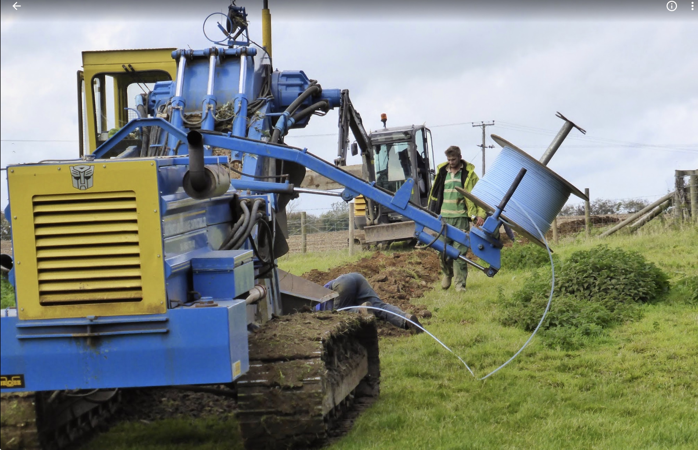
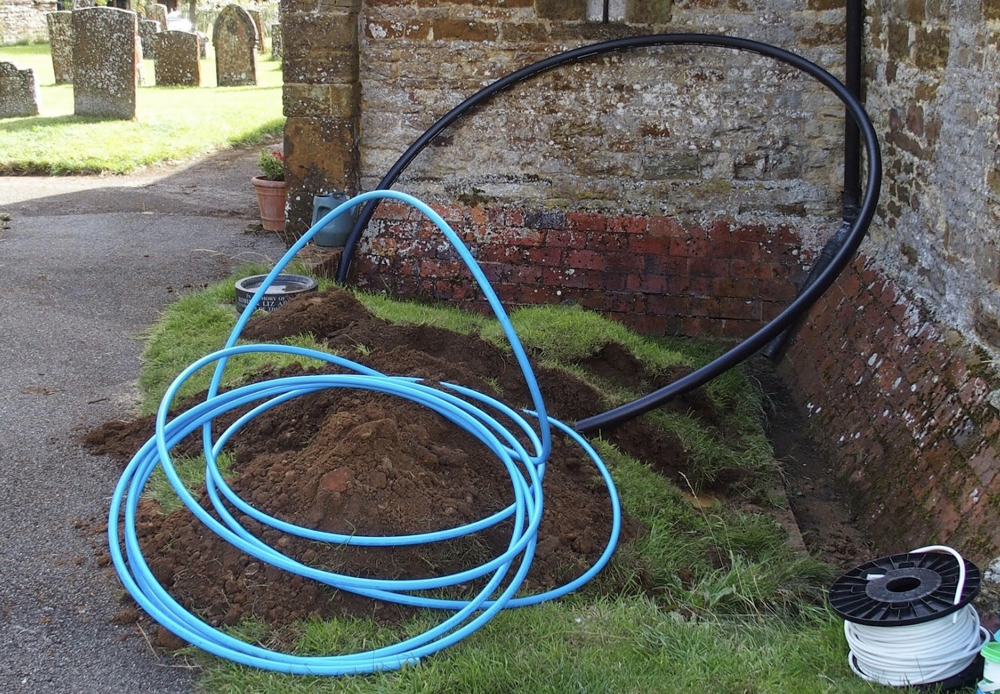
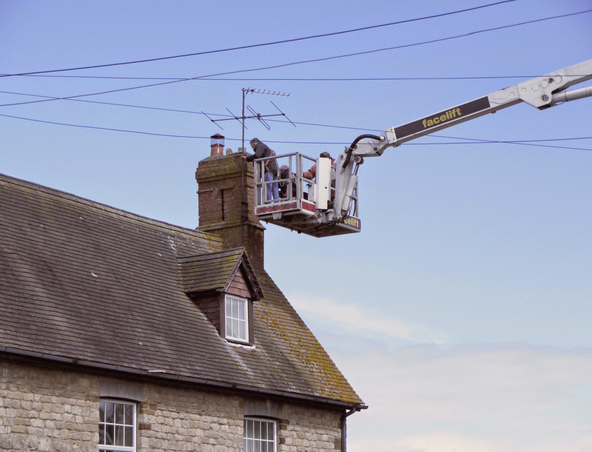
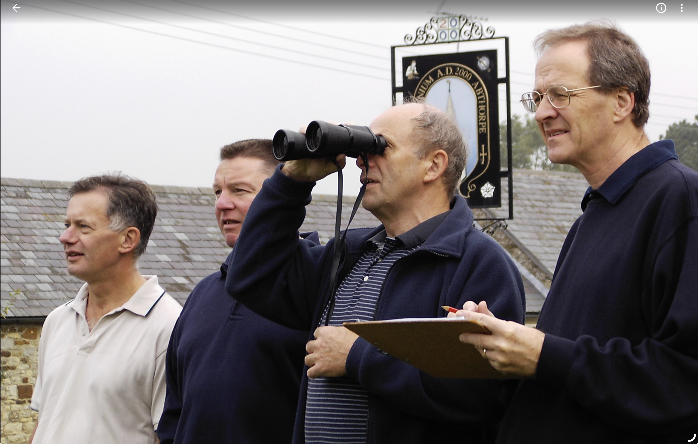
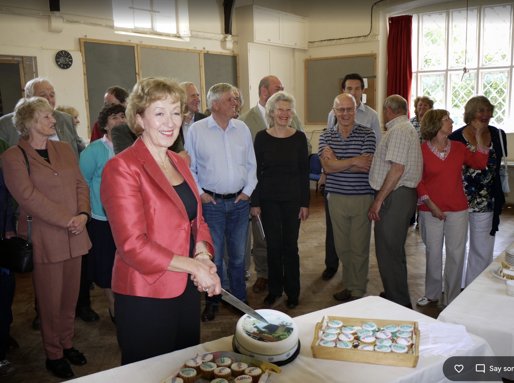
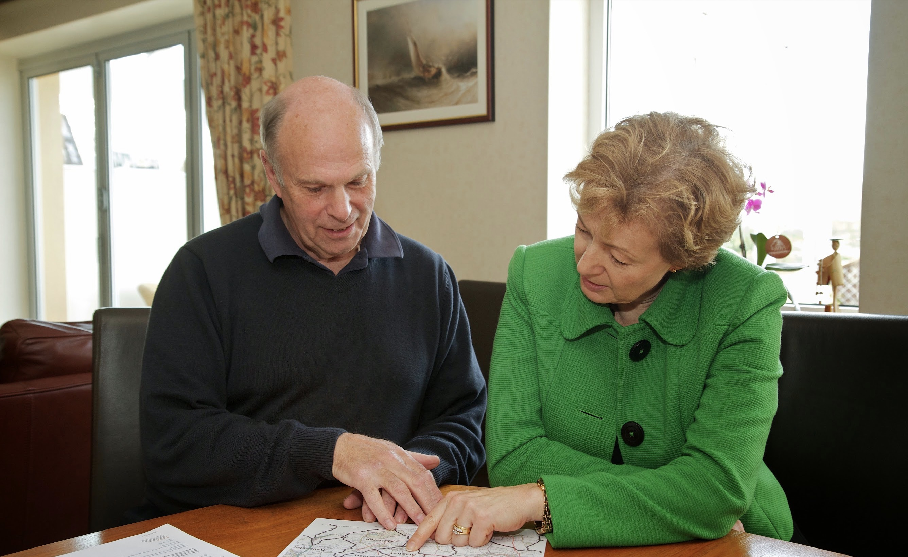

"Not in my life-time" - a term often heard in the rural backwaters of England since the beginning of the 21st century. What we are referring to is, of course, is half-decent broadband.
But in middle-England there are those of us who would not take this state sitting down. In the village of Abthorpe, a 120-house ”Royalist” Stronghold in the upper Tove valley in Northamptonshire, a group of us led by Eric decided to change the face of broadband delivery in the area for ever.
Dial-up connection to the internet at 0.024Mbps was improved dramatically in 2003 with a community supported satellite data connection to Belgium and provided "always on" broadband at 1.0Mbps download and 0.25Mbps upload. This served 50 houses distributed across the roof-tops by 2.4Ghz WiFi. Cantennea (had to be Scotch cans), Fish-fryers (3-foot mesh reflectors) and commercial antennae were used in an effort to maximise radio connection and reduce interference. Lots of fun with RG-142 co-ax and SMA connectors! However, we did have to train Google that we were English, not French!



Directors: Eric Malcomson; Philip Berry; Keith Fenwick; Peter Watkins; Richard Tomalin; Oliver Essame. Treasurer: Frank Hunter. Secretary Dave Long.
In the village of Abthorpe, a 120-house ”Royalist” Stronghold in the upper Tove valley in Northamptonshire, a group of us led by Eric decided to change the face of broadband delivery in the area for ever.
Dial-up connection to the internet at 0.024Mbps was improved dramatically in 2003 with a community supported satellite data connection to Belgium and provided "always on" broadband at 1.0Mbps download and 0.25Mbps upload. This served 50 houses distributed across the roof-tops by 2.4Ghz WiFi. Cantennea (had to be Scotch cans), Fish-fryers (3-foot mesh reflectors) and commercial antennae were used in an effort to maximise radio connection and reduce interference. Lots of fun with RG-142 co-ax and SMA connectors! However, we did have to train Google that we were English, not French!